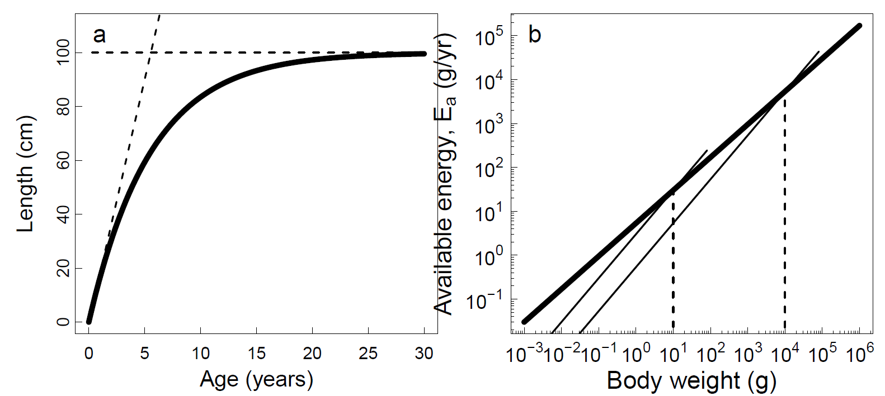

問題：個体は摂餌から得られるエネルギーをどう利用するか？
解決のため
Enegy budget 個体の中での質量とエネルギーの流れ Assimilation losses+Metabolic losses+Enegy spent on growth and reproduction
Life History Invariants：生活史においてkeyになる無次元の重要パラメータが異なる種間系統間で一定値をとるとき、そのパラメータ本章では、成熟前と成熟後の異なる成長様式を一つのモデルで記述する(biphasic growth model) - 成熟前：エネルギーをすべて成長に使う - 成熟後：エネルギーを成長と再生産に使う
再生産にかかるコストを考慮した成長モデルがのちの章で必要になる。 最初に、もとになるvon Bertalanffyの成長式を詳しく見ていく
同化作用(anabolic)と異化作用(catabolic)のプロセスから構成される
\[ \frac{dw}{dt}= Aw^n-kw\tag{3.1} \]
\(Aw^n\) :エネルギーの獲得(accuisition, anabolic) \(kw\) :エネルギーの損失(losses, catabolic)
いずれも体重のべき乗（ｎと１）に比例する。
数式（１）は\(w=cl^3\)の関係を使って以下の様にかける(Box3.1) \[ \frac{dl}{dt} = K(L_\infty-l)\tag{3.5} \] ここで\(K= k/3\), \(L_\infty=c^{-1/3}Ak\)
これを解くと（例えば赤嶺****）von Bertalanffy の成長式になる \[ l(t) = L_\infty(1-e^{-K_t})\tag{3.6} \] K：growth constany（時間あたり）, \(L_\infty\)：極限体長
また3.4式を\(w=cl^3\)を用いて変形すると \[ \frac{dw}{dt}=\frac{dcl^3}{dt}=3cl^2\frac{dl}{dt}=Aw^n-kw \]
\[ \frac{dl}{dt} = \frac{1}{3cl^3}A(cl^3)^n-\frac{kcl^3}{3cl^3} \] ここでn=2/3 ならば \[ \frac{dl}{dt}=\frac{1}{3}C^{-1/3}A-\frac{k}{3}l =\frac{k}{3}\bigl(\frac{c^{-1/3}A}{k}-l\bigr) \] となり、\(K=\frac{k}{3}\), \(L_\infty = \frac{c^{-1/3}A}{k}\) となる
初期の成長は傾き\(KL_\infty\)の直線似近く（斜めの破線）、\(l\)が\(L_\infty\)に近づくと成長が止まる（横の破線）。

この成長式はシンプルで、年齢あたりのサイズの変化によく一致し、体長という測定しやすい変数を用いたという点で大いに成功した。
\(L_\infty\)の誤差は\(K\)に影響し、往々にして\(L_\infty\)の不確実性は高い
（いっぽうが過大推定されると、もう一方は過小推定される）
Aを確かな筋から推定できれば、\(L_\infty\)の不確実性の\(K\)への影響は制限されるだろう
von Bertalanffy の成長式は、エネルギーの獲得と損失の重要性が年齢や体のサイズによって変化することで形が決まる。
図3.1b 体が大きくなるほどAw0.75は増えていくがkwも増えていき、両者が一致するところで成長が止まる。
年齢が重なり体が大きくなると、損失が大きくなって成長にエネルギーが回らなくなり、それ以上サイズは増えなくなる（極限サイズ）
このときの関係は以下のようにかける \[ W_\infty=\bigl(\frac{A}{k}\bigr)^\frac{1}{1-n} \]
AとkにはW∞の決定においてトレードオフの関係がある。
式3.4と上の式を使うと、種による成長の違いは、AとW∞だけで記述できる \[ \frac{dw}{dt}=Aw^n\bigl[1-\bigl(\frac{w}{W_\infty}\bigr)^{1-n}\bigr] \] (この式は体重の増加を示した成長式で、W∞とAだけで記述できる)
Aはエネルギーの獲得と同化のプロセスを表現する成長係数であり、このプロセスは種の極限体長とは関係しないと期待できる。
Aの値を決めるために、von Bertalanffy 成長式で推定された\(K\) と\(L_\infty\)の値に頼るとしよう（図3.3）。
\(KL_\infty\)とAの関係は、\(n=2/3\)で確認されているのであるが、box3.2から、\(n=3/4\)でも概ねOK。
図3.3をみると、大雑把に見ればAは\(W_\infty\)に対して独立のようである。データは同じ極限サイズでも成長速度は2倍近くことなることも示す。実際にはAは極限サイズが大きくなるにつれて若干増加する。これは大型の種は小型の種より成長が速いことを示す。速い成長は高い体温、高い代謝を伴い、それはサバ科魚類に多い。そして実際、サバ科魚類は大型魚種の主要な種である。
以下では単純のため、Aは一定として扱う。A=5.35g^0.25/yr
Von Bertalanffy の式から派生。主な違いは、すべてのエネルギーを成長に使う幼魚と、繁殖も行う成魚の様式を区別した上で統合し、成長式に再生産によるロスを反映できるようにした。
初回成熟時の体重（＝半数成熟体重）の極限体重に対する比率を\(\eta_m\)とする
未成魚の成長 \(g_j(w) = Aw^n\)
成魚の成長 \(g(w) = Aw^n-kw\) , \(w>\eta_mW_\infty\)
両者の間を成熟関数でつなぐ \[ \psi_m(w/w_m) = \bigl[1+\bigl(\frac{w}{w_m}\bigr)^{-u}\bigr]^{-1}=\bigl[1+\bigl(\frac{w}{\eta_mW_\infty}\bigr)^{-u}\bigr]^{-1} \] \(\psi(w/w_m)\)は、\(w<<w_m\)ではゼロに、\(w>>w_m\)では1に近づく。uはその変化の強さを決めるペラメータ（図3.4bの立ち上がり＝steepnessを決める）
成熟関数を導入することにより、以下のように生活史の異なるphaseを一つの式でまとめることができる。 \[ g_{bp}(w)=Aw^n-\psi_m(w/w_m)kw \] ふたたび\(k=AW_\infty^{n-1}\)を用いて \[ g_{bp}(w) = Aw^n\bigl[1-\psi\bigl(\frac{w}{\eta_mW_\infty}\bigr)\bigl(\frac{w}{W_\infty}\bigr)^{1-n}\bigr] \]
biphasic modelは解析的に解けないが、幼魚期の部分だけとりだせば解析的に解くことができる（Box3.3）
繁殖への投資のべき数は負であるので、極限体長が大きくなるほど体重あたりの繁殖への投資は減少する。この減少のパターンは図3.5に示すように、観察されている。 繁殖投資kwは卵の生産だけでなく、他の繁殖に関わる要素：産卵回遊など にも使われる。これらその他の繁殖に要するエネルギーも個体の産卵量（ \(R_egg\) 個体あたり時間あたり卵量）に比例すると考えて、 \[ R_{egg} = \varepsilon_{egg}kw = \varepsilon_{egg}AW^{n-1}_\infty \]
\(\varepsilon_{egg}\) は再生産効率（reproductive efficiency)であり、図3.5から0.22に近似できる。
パラメータ（\(A\), \(\varepsilon_{egg}\), \(\eta_m\), \(n\)）は, 種の間で大まかにはinvariantとし、成長と再生産の種の違いを表現する、主たる形質（master trait)として極限サイズ\(W_\infty\) を採用した。
これにより、小さい魚と大きな魚の違いについて一般化した記述が可能になる（general statementを作ることができる）。
もちろん\(W_\infty\)以外の形質についても種特異的な値を用いれば、その種のより正確な成長式を得ることができる。
biphasic growth modelは、成長と再生産をサイズの関数として記述する。それじたい、一つの朱だけを相手にするには十分だが、今後動的な成長に関する記述を扱うには不十分。それに重要なパラメータである成長効率Aは経験的なデータに頼って決めた。Aは２章で構築した生理学に基づく基本的な仮定とどう結びつくだろう？もうちょい深堀りが必要。
biphasic growth modelの元になるvon bertalanffyの成長式は、同化作用（anabolic)過程:エネルギーの獲得（\(Aw^n\)) と、異化作用（catabolic)過程：エネルギーの損失（\(kw\))の過程から構成され、呼吸はkwに関係すると考えた。彼の成長と代謝に関する解釈は、単純すぎる。損失はエネルギーの獲得過程でも生じるし、再生産による損失は考えていない。
エネルギー代謝を絵に書くと図３．７、数式に書くと以下の式になる。
\[ C(w)=M_{assim}(w) + M_{std}(w) +M_{act}(w) + R_{egg}(w)/\varepsilon_{egg}+g(w) \]
\(C(w)\) :consumption
\(M_{assim}(w)\): assimilation
\(M_{std}(w)\): standard metabolism
\(M_{act}(w)\) :activity
\(R_{egg}(w)/\varepsilon_{egg}\):reproduction
\(g(w)\):growth
すべての項は湿重量の関数であり、湿重量はエネルギーに換算できる（１gで5.5KJ）ので、上の式はenergy budgetを表現しているといえる。これらを2章でえたパラメータに置き換えていく。
消費がすべて同化されるわけではなく、エネルギーに使用されずに排出される部分（egestion（消化器系による排泄）、excreation(血液系による排泄）によっるトスがある。排尿)）、消化吸収にかかる代謝的損失による部分がある。すべてのプロセスは消費量に比例しする。Kitchell el al(1977)は消化行動で15％、egestionで15％、excreationで10％のロスがあると見積もった。この部分を最大消費量に対する損失を表現する係数\(\varepsilon_a\)として、2章の2.18式にかけると、同化量は以下のように書ける。 \[ C_{assim}(w) = \varepsilon_af_0hw^n＝C(w)-M_{assim} \]
standatd metabolism は、生命を維持するために必要な基本的な代謝量であり、
\[M_{std} = k_sw^n\]と書ける。
一方、activity metabolismは見積もりが難しい。ここはシンプルに、\(M_{std}\)に比例するとし、その比率は\(k_s\)に含まれると考える。standard and activity metabolismは、最大消費率\(hw^n\)に比例すると考えることができ、
\(k_s = f_c\varepsilon_ah\) とする。\(f_c\)は限界摂餌レベルである。生命の維持と摂餌のための代謝はしたがって、ksを限界摂餌レベルの\(\varepsilon_ah\) 倍として以下のように書くことができる。 \[ M_{std}(w) + M_{act} = f_c\varepsilon_ahw^n \]
Hartvig et al(2011)により、$f_c $ はおよそ0.2とする。
さて3.26 式を書き換えて成長を表すようにまとめると、 \[ g(w) = \varepsilon_af_0hw^n -f_c\varepsilon_ahw^n-\psi(w/w_m)kw \]
\[ g(w) = \varepsilon_ah(f_0-f_c)w^n-\psi(w/w_m)kw \]
\[ A=\varepsilon_ah(f_0-f_c) \]
となる。\(\varepsilon_a, f_0, fc, h\) の定数は、種によって大きく違わない(life history invariantsである）ことが期待される。なので成長係数Aは一定と扱うことができる（じつは\(f_0\)は4章のモデルにより一定とは言えないことがわかってるんだけど）。
成長式に含まれるいろいろなプロセスは、\(W_\infty\)できまるとしているが、たとえば3.11式は\(W_{\infty}\)がAとkで決まることを示している。Aを一定と考えれば、kをMater traitとし、kから\(W_{\infty}\)を決めることもできる。なぜそうしないか？使いやすく推定が楽。data-limitedな資源でも推定可能→data-poorな資源にもモデルを応用できる。直感的（intuitive)にわかりやすい。\(W_{\infty}=10kg\)といわれるとそりゃ魚食性魚類だろうと想像できるが、\(k=0.44/yr\)といわれてもピンとこない。
本章の個体成長モデルは、生活史に関わる多くの重要なパラメータが\(W_{\infty}\) and/or Aに比例することを示唆することから、この2つのパラメータが決まればその他のパラメータを決めることができるといえる。理論的には正しいのだけど、データ解析からは明確にその関係を示すことはできていない。life-history invariantsが本当にinvariantsであると断言できるだろうか？ この疑問には3つの観点から答えることができよう、semantic（意味論的）、empiric(経験的)、thoretic(理論的)に。
ある測定値（成熟サイズの極限サイズに対する比率とか）をinvariantとみなす、ということの意味は、それが種の間で異ならないということではない。そうではなく、そのパラメータがほかの形質（たとえば成長速度とか、水温などの環境、系統発生学的に近い種は変動幅が似ているとかなど）とco-varyではないことを意味する。life-history invariantという言葉を使うことはすなわち生活史が種によって異ならないことを意味するのではなく、現在の理解のレベルでは、種による変動はランダムで予測不可能ということである。生活史パラメータが基本的にinvariantであるという誤解をさけるためには、life history parameterといったほうがよかろう。
経験的には、データに限界があることを忘れてはいけない。パラメータのいくつかは直接推定されていない。たとえばAであるが、これは個々の推定されたvon Bertalanffy の成長曲線から推定したKと\(L_{\infty}\)から得たもので、考慮していないバイアスが含まれるだろうし、システマティックなバイアスもあるだろう。
それに成長曲線の多くは１個体のそれではなく、年齢あたりサイズの平均である。もし速い成長が高い死亡率につながるのであれば、高齢になるほどデータは遅い成長の個体のものでしめられ、結果にバイアスが生じる。再生産投資などは推定自体難しい。生殖腺重量は繁殖投資のプロキシではあるが、年間の繁殖投資を推定するには、一年に何回産卵するか、摂密度によって産卵はどのように変化するか、skip spawnerがどれくらいいるか、産卵回遊や産卵行動にどれくらいの投資が必要か、など知る必要がある。これらが適切に考慮されたとしても、理論値からの残差は十分説明できないだろう。
なので、きっと考慮にいれていない形質があり、それが図3.3にみられるような・・・成長速度の10倍の変動幅をもたらすような形質があるのた。それがなにかはわからないが、仮説はたてられる。候補になるtrait axisの一つは slow-fast life history continuum である。
成長がおそい→餌が取れない→ひくいclearance rate→低い活動量→低い限界摂餌レベル
clearance rate を正確に推定するのは難しいし、Niel Gerner Andersonの言葉を借りれば enegy budgetのダークホースである活動係数についての知識も乏しい。
このような情報の乏しさが、追加の候補となる形質の背後にあるトレードオフが明確にされていないことの主な要因だ。
もうひとつの候補になる形質は防御への投資である。身を守るための棘を持ったり、擬態したり、隠れたりといった戦略にはそれぞれコストがかかる。隠れるということはその間、餌を得ることを我慢しなくてはならない。そのためのコストもある。防御形質が持つトレードオフは、slow-fast lifehistory continuumよりさらに扱いにくい。防御への投資と死亡率のトレードオフは後の章であつかう
これらのトレードオフが定量されれば、図3.3にみられるような誤差をいくぶん小さくすることはできるだろう。しかし考慮すべき形質が増えるとモデルは複雑になっていくので、大きな意味のある改善がみとめられない限り、考慮すべき形質は可能な限り少ないほうが良い。この点は9章でまた議論するとして、最小モデルのMaster traitとして極限サイズを用いることとする。
##3.5 まとめ
para1
この章では von Bertalanffy likeなbiphasic growth modelを構築した。このモデルは成長と再生産（繁殖）が種によってどれくらい変化するかを、極限サイズによって示すことができる。
極限サイズが大きい→サイズあたりの繁殖投資が少ない。
成長に関するその他のみかたも、パラメータのセットをつかって説明できる。これらパラメータは種の間でかならずしもinvariantではないが、極限サイズとの関係においてはsystematicな変化はない。かくして極限サイズは Master traitとなりうる。
para2
para3 para4